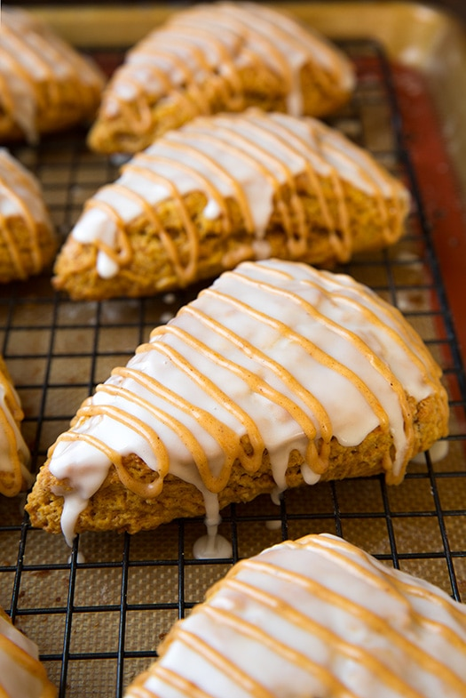
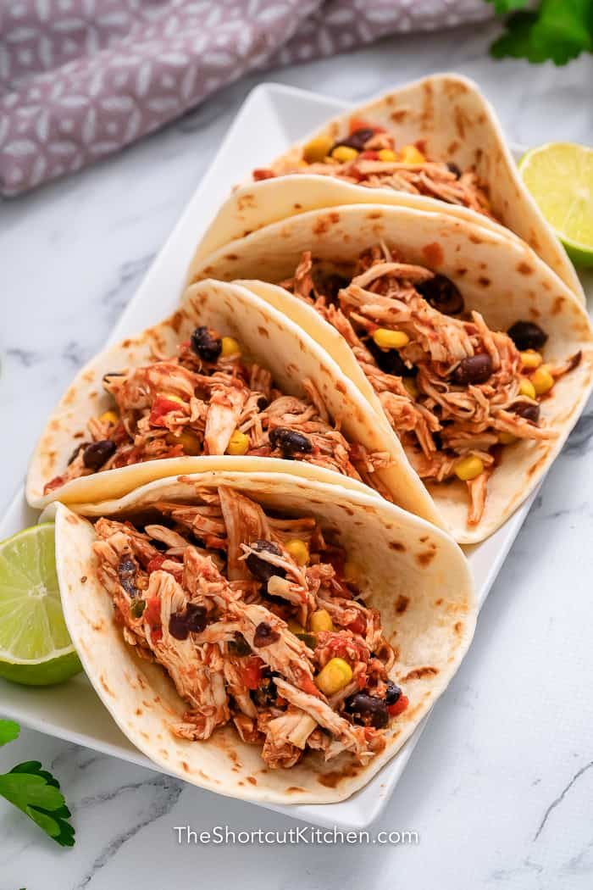

Starbuck's Pumpkin Scones
Total time:
30 min
Cooktime:
15 min
Author:
Diana

2 ½ cups (300 g) all purpose flour
1 tablespoon baking powder
½ teaspoon baking soda
½ teaspoon salt
1 teaspoon ground cinnamon
¼ teaspoon ground nutmeg
¼ teaspoon ground ginger
½ cup (112 g) unsalted butter
¾ cup (170 g) pumpkin puree
½ cup (100 g) light brown sugar
1 large egg
¼ cup (55 g) heavy cream plus more for brushing on the tops
2 – 2 ½ cups powdered sugar
4-5 tablespoons heavy cream
1 tablespoon pumpkin puree
¼ teaspoon ground cinnamons
Directions
- In a large mixing bowl, whisk together the flour,
baking powder, baking soda, salt, cinnamon, nutmeg,
and ground ginger.
- Add the cold butter cubes and cut into the mixture
using a pastry cutter or two butter knives until
the largest pieces are the size of peas; set aside
- In a separate smaller bowl,
whisk together the pumpkin,
brown sugar, egg, and heavy cream until well combined.
- Add the wet ingredients to the flour mixture and stir
until just combined.
The dough will be very wet and sticky.
- Transfer the dough to a well-floured surface,
sprinkle some flour on top, and form an 8-inch (20 cm)
disc using floured hands. Cut the scones using a sharp knife
into 8 equal wedges, then carefully transfer them
to a parchment-lined baking sheet.
- Preheat the oven to 400°F (200°C), or 180°C
if using a fan oven. While the oven preheats,
chill the scones in the fridge. Remove from the fridge
then brush with a little heavy cream
before baking in the preheated oven for 12-15 minutes,
or until a toothpick inserted into the center comes out clean
and the bottom is just lightly golden.
- While the scones bake, prepare the glaze by whisking
together 2 cups of the powdered
sugar and heavy cream until smooth and spreadable.
- Allow the scones to cool completely
before spooning and spreading the glaze
over the top of each scone.
- To the remaining glaze in the bowl,
whisk in the pumpkin puree and cinnamon until smooth.
If the icing is too thin,
add a sprinkle of powdered sugar
until it is the desired consistency.
- Drizzle or pipe the pumpkin
glaze over the scones once the first layer
has set slightly, about 10 minutes.
Shredded Chicken Tacos
